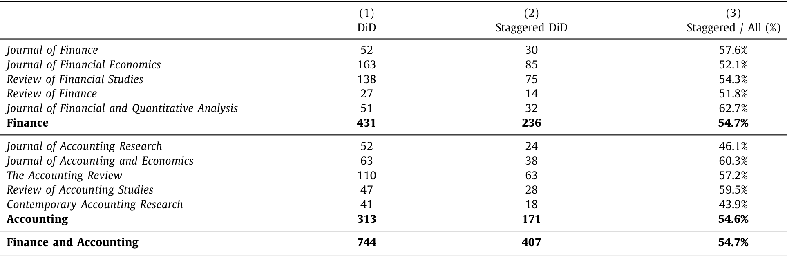
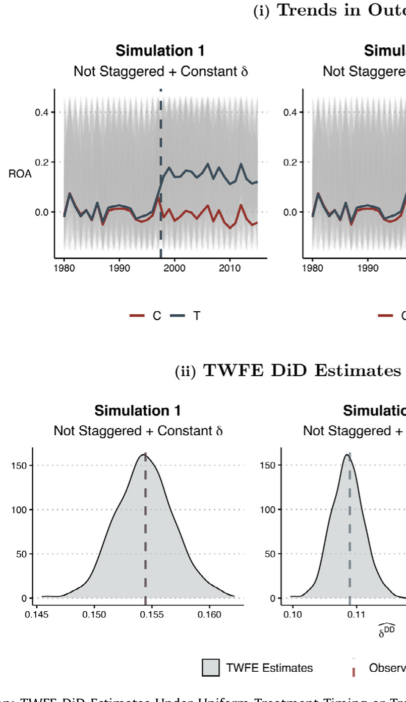
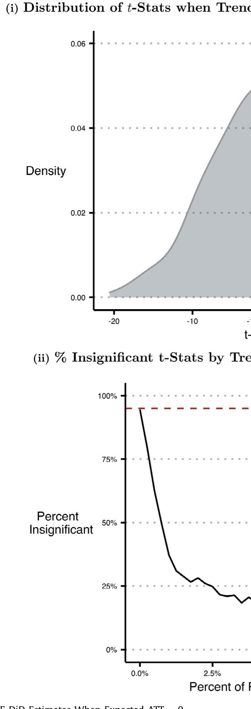
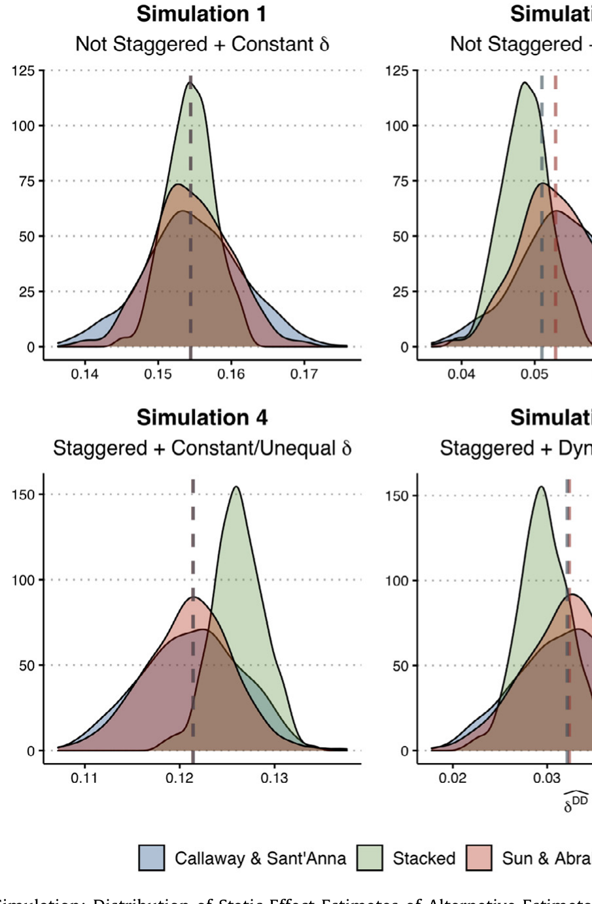
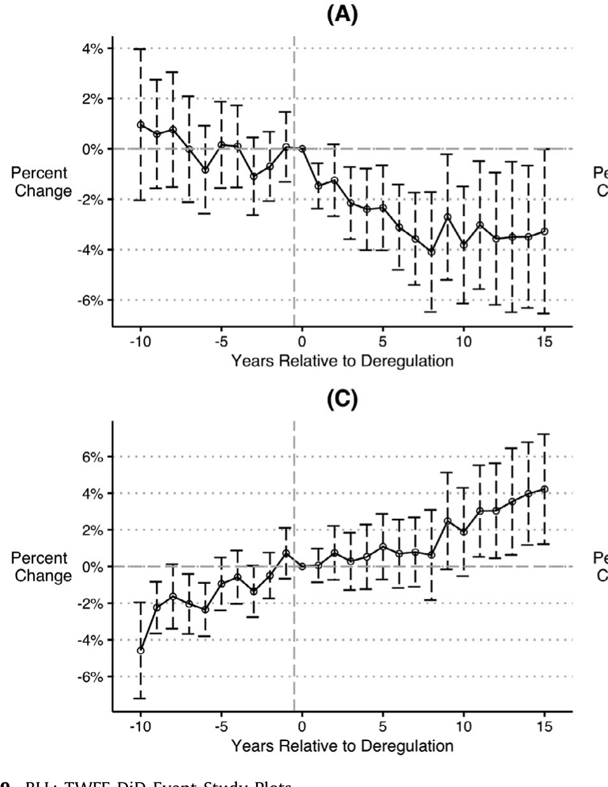
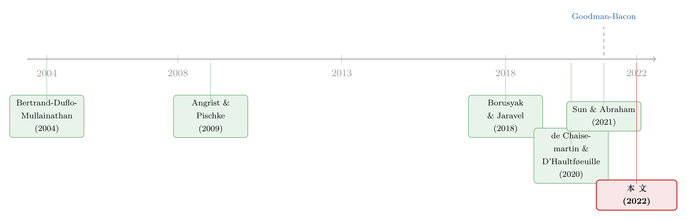

当「更稳健」的设计悄悄把符号弄反了——重读交错双重差分
本文读的是 Baker, Larcker & Wang (2022, JFE)：金融、会计、法律领域里被奉为「更可信」的交错双重差分 (staggered difference-in-differences)，在「处理时点不一 + 处理效应随时间变化」并存时会系统性地有偏——偏到什么程度？偏到即便你能随机分配处理、平行趋势成立，估计量也可能取到与真实 ATT 完全相反的符号。论文讲清了这个偏误从哪来、何时发作，并给出三种替代估计量，最后回头把两篇顶刊论文「重做」了一遍。
1 一个被普遍相信、却很少被审视的「常识」
做实证的人对 双重差分 (difference-in-differences, DiD) 大概都不陌生。它是过去三十年「可信性革命」(credibility revolution) 的台柱：找一条法律、一项市场规则的出台当作处理 (treatment)，让它打到一批公司而打不到另一批，再比较两组在事件前后的「差中之差」，由此推断因果。
而在这个台柱之上，又长出了一种被认为「更高级」的变体：当一项法规在不同的州、不同的国家先后落地时，研究者把这些发生在不同时点的处理统统塞进一个面板，用 双向固定效应 (two-way fixed effects, TWFE) 回归一次性估出来——这就是 交错双重差分 (staggered DiD)。
它为什么流行？论文开篇给出的数字相当惊人。作者手工翻读了 2000–2019 年间五本顶级金融期刊和五本顶级会计期刊的论文，发现用了 DiD 设计的有 744 篇，其中 407 篇（55%）用的是交错版本；而这 407 篇里，394 篇（97%）都发表在 2010 年之后。换句话说，交错 DiD 几乎是过去十年实证金融的「默认武器」。

Table 1
更值得玩味的是，大家用它的理由：人们普遍相信，把多个发生在不同时点的处理放在一起，能够稀释「同期趋势」(contemporaneous trends) 的干扰——既然处理发生在五花八门的年份，总不至于有哪个共同的宏观冲击恰好和所有处理同步吧？于是交错设计被默认为「比单期 DiD 更稳健」。
这篇论文要告诉你的，恰恰是这个「常识」错得有多离谱。交错设计非但没有更稳健，反而引入了一个单期 DiD 根本不存在的新麻烦。
2 麻烦的来源：被「错当成对照组」的处理对象
要看清问题，得先回到那个最朴素的 2×2 设计：一个处理、两期、两组（处理组与对照组）。它之所以能识别因果，靠的是 平行趋势 (parallel-trends) 假设——对照组的事后变化，恰好替处理组「描出」了它如果没被处理本来会走的那条路。
接着，一个自然的问题是：当处理时点交错时，那个跑出来的 TWFE 系数 \(\delta^{DD}\) 到底在估什么？Goodman-Bacon (2021) 给出了一个漂亮而致命的答案——它其实是数据里所有可能的「两组 / 两期」DiD 的方差加权平均。
设想数据里有一个从不被处理组（记作 \(U\)）、一个早处理组（\(k\)，在 \(t^*_k\) 被处理）、一个晚处理组（\(l\)，在 \(t^*_l\) 被处理）。TWFE 会把它们两两组合，拼出四个 2×2 比较。前两个没问题：拿处理组和「从不处理组」比。但真正关键的一步在于后两个「仅时点」(timing-only) 比较：
- 一个是拿早处理组当处理、晚处理组当对照（在晚处理组还没被处理的窗口里）——这个还行；
- 另一个，却是拿晚处理组当处理、把已经被处理过的早处理组当对照。
问题就出在最后这个。早处理组的结果在它被处理之后还在动——因为处理效应往往不是一次到位、而是随时间慢慢累积（即 动态处理效应, dynamic treatment effects）。可 TWFE 偏偏把这群「还在变化中」的已处理单位，当成了晚处理组的「干净对照」。它们的结果变化里混着自己的处理效应，被当成了反事实趋势减掉了——作者把这叫 「坏比较」(bad comparisons) 问题。
这和「平行趋势被违反」不是一回事，却同样要命。论文给了一个量化的直觉：在有 \(G\) 个不同处理时点组、外加一个从不处理组的设计里，\(G^2-G\) 个（共 \(G^2\) 个）构成性 2×2 是「仅时点」比较，因而有 \((1-1/G)/2\) 比例的构成性 DiD 是潜在有问题的。\(G\) 越大、从不处理组占比越小，这个毒就越浓。
3 核心方程：把 TWFE 估计量拆成三块
Goodman-Bacon (2021) 进一步证明，当样本趋于无穷时，交错 TWFE 估计量收敛到三个部分之和。这是全文最该被annotate的一个式子：
把这个式子读透，论文的全部张力就都在里面了。
首先，注意 \(VWATT\) 用的是方差权重，而非样本份额。OLS 为了效率，会给「处理时点靠近窗口中段」的 2×2 更大的权重（因为那里处理变异最大）。这意味着，即便每个 cohort 的真实 ATT 都为正，加权出来的 \(VWATT\) 也未必等于样本平均 ATT——你只要改变面板的长度（多取几年或少取几年），权重就变了，点估计也跟着变，哪怕每一个底层的 2×2 都纹丝不动。
接着，看那个减号后面的 \(\Delta ATT\)。它捕捉的正是「已处理单位被当对照」带来的污染。当处理效应是静态的（事后被一个常数平移）但跨单位异质时，\(\Delta ATT=0\)，TWFE 还能收敛到 \(VWATT\)；可一旦处理效应随时间变化，\(\Delta ATT\neq 0\)，这一减就减出了大问题。
于是反转出现了：论文用一句话点破了最反直觉的结论——即便所有 cohort 的真实 ATT 都为正，\(\hat\delta^{DD}\) 也可能取到负值。也就是说，你可能拿着一个显著为负的系数，信誓旦旦地写下「该政策有害」，而真相恰恰相反。这就是 Type-I / Type-II 错误的双重风险：你既可能凭空捏造出一个不存在的效应，也可能把一个真实存在的效应判了「死刑」。
4 用模拟把偏误「逼」出来
光有理论还不够说服人。论文从 Compustat 里造了一批合成数据，模仿应用公司金融里最典型的设定：一个州层面法律的交错变更，打到一批公司，结果变量是资产收益率 (ROA)，跨越很多年——这正是 Karpoff & Wittry (2018) 那类反收购法研究的样子。
模拟给出三条干净的结论：
- 单期处理下，DiD 是无偏的——即便有动态处理效应，也无妨；
- 交错时点 + 同质处理效应（跨公司、跨时间都一样）下，DiD 仍然无偏；
- 唯独当交错时点与处理效应异质 / 动态两者叠加时，交错 DiD 才开始系统性地有偏。

Figure 1: Simulation: TWFE DiD Estimates Under Uniform Treatment Timing or
最刺眼的一张图，是作者让真实的预期 ATT 设为零（或为正）、却让处理效应随时间累积时——TWFE 静态估计量的分布被整体推到了错误的一侧。如图 4 所示，一个本该围绕真值波动的估计量，却稳稳地落在了相反的符号上。这不是小样本噪声，而是估计量本身的偏误。

Figure 4: Simulation: TWFE DiD Estimates When Expected ATT 0
更糟的是，研究者常用的「补救动作」——做事件研究 (event study)、画动态效应图、看「处理前趋势是否平坦」来给平行趋势背书——也救不了。Sun & Abraham (2021) 证明，在交错时点 + 效应异质下，某个相对时间期的动态效应估计会被其他相对时间期的因果效应所污染。于是你可能看到一条漂亮平坦的「事前趋势」，就放心地宣布平行趋势成立——而其实它压根不成立。
5 怎么救：三种替代估计量
那真正关键的出路在哪？论文总结了计量与应用文献给出的三种替代方案（Callaway & Sant'Anna, 2021；Sun & Abraham, 2021；以及 Gormley & Matsa, 2011 的「堆叠」思路）。它们的共同思想只有一句话：绝不拿已经被处理过的单位去当对照——要么只用从不处理组、要么只用尚未处理组作为干净对照，再把各个 cohort 的效应按合理的份额加权汇总。
它们的差别在于：用哪些观测当有效对照、协变量怎么进、效率与偏误如何取舍。论文把它们应用到自己的模拟数据上，结果令人安心——这些替代估计量都能把真实的处理效应重新捞回来。如图 6 所示，几种稳健估计量的静态效应分布，重新对准了真值。

Figure 6: Simulation: Distribution of Static Effect Estimates of Alternative Estimators
6 不只是理论：把两篇顶刊「重做」一遍
如果故事到此为止，它还只是一篇计量科普。论文真正的杀伤力，在于它回头去复制并重估了两篇发表在顶级期刊的论文：一篇是 Beck, Levine & Levkov (2010) 关于美国银行业放松管制的研究，另一篇是 Fauver, Hung, Li & Taboada (2017，下称 BLL) 关于全球董事会改革与公司价值的研究。
在这两篇里，作者都先用 Goodman-Bacon 分解做诊断，发现「仅时点」比较占了相当大的权重；再换上稳健估计量重估。结论是：替代估计量给出的因果估计，往往不再支持原文的核心主张。如图 9 所示，对 BLL 的事件研究重做后，原本被解读为「改革提升公司价值」的动态路径，呈现出与原文不一致的形态。论文同时还展示了一个常被忽略的实操细节——在事件研究里把相对时间期「装箱」(binning) 的方式，本身就会左右动态效应的估计。

Figure 9: BLL: TWFE DiD Event-Study Plots
这一步是全文的点睛之笔：它把一个「理论上可能有偏」的命题，变成了「在你我天天读的顶刊论文里确实发生了」的事实。值得一提的是，BLL 的原作者随后专门写了一篇回应 (Fauver et al., 2021) 来反驳——这场交锋本身，也说明了问题的分量。
7 文献脉络
这条线索的起点，要追溯到 Bertrand, Duflo & Mullainathan (2004) 那篇著名的「我们到底该多信任 DiD」——它最早系统地敲打了 DiD 的标准误（序列相关问题）。本文的标题（"How much should we trust staggered DiD estimates?"）显然是在向它致敬，但矛头指向的是一个全新的靶子：不是标准误，而是点估计本身的偏误。

中间这十几年，DiD 在 Angrist & Pischke (2009) 这类教科书的推广下成了「即插即用」的回归工具，灵活、好上手——也正因如此埋下了隐患。真正的转折发生在 2018 年前后：Borusyak & Jaravel (2018)、Athey & Imbens (2018) 几乎同时意识到，TWFE 在交错时点下并不老实。随后是一连串集中爆发的计量论文：de Chaisemartin & D'Haultføeuille (2020) 给出了一般条件下的分解，Goodman-Bacon (2021) 给出了那个「方差加权平均」的精确刻画，Callaway & Sant'Anna (2021) 与 Sun & Abraham (2021) 则给出了可落地的稳健估计量。
本文 (Baker, Larcker & Wang, 2022) 在这条脉络里的位置很清楚：它不是新方法的提出者，而是那个把这些散落在计量期刊里的「警报」，翻译给金融 / 会计实证研究者听、并用真实顶刊论文证明「警报确实响在你家门口」的人。也正因为这个「桥梁」角色，它的引用与影响力在应用领域反而格外大。
（关于实证设计被「重做」后结论翻盘的案例，本博客也写过几篇相关的，例如《事件研究里的「假阳性」：当一根 t 值不再等于因果》、《期限结构会自己动：当双重差分撞上一条收益率曲线》。）
8 评论与延伸（Q&A + 研究方向）
(a) 几个可能的疑问
Q：交错 DiD 的偏误，和「平行趋势被违反」是一回事吗？
不是。平行趋势讲的是对照组本身走势不对（对应式中的 \(VWCT\neq 0\)）。而本文强调的「坏比较」是另一种病：哪怕平行趋势完美成立、哪怕处理是随机分配的，只要处理效应随时间变化、又用了已处理单位当对照，偏误（\(\Delta ATT\) 项）照样发生。两者机制不同，但都会污染估计。
Q：是不是只要避免用交错 DiD，改回单期就万事大吉？
模拟里单期 DiD 确实无偏，但现实中很多政策天然就是交错落地的（各州先后立法），你没得选。论文的处方不是「别用交错设计」，而是「用对的估计量」——换成 Callaway-Sant'Anna 这类稳健方法，而非退回到信息更少的单期比较。
Q：那为什么大家会误以为交错设计更稳健？
因为直觉上「处理时点五花八门，总不会和某个共同冲击同步」。这个直觉对同期趋势这一种威胁是成立的，却恰恰让人忽略了它引入的新威胁——把已处理单位当对照。一个旧问题的缓解，掩盖了一个新问题的诞生。
Q：偏误真能大到把符号弄反吗，还是只是理论上的极端情形？
论文的模拟显示，在「预期 ATT 为零或为正、处理效应随时间累积」的设定下，TWFE 估计量的整个分布都落到了错误一侧（图 4）。这不是尾部极端值，而是估计量的中心就偏了。对 BLL 的重估也表明，结论翻盘在真实数据里会发生。
Q：做个事件研究、确认事前趋势平坦，不就能排查吗？
这正是论文要泼的一盆冷水。Sun & Abraham (2021) 证明动态效应估计会被其他相对期的效应污染，于是「看起来平坦的事前趋势」可能是假象。常规的事件研究稳健性检验，在这里给的是虚假的安全感。
Q：什么情况下交错 TWFE 其实还能用？
当处理效应是同质的（跨公司、跨时间都一样），\(\Delta ATT=0\)，偏误消失。此外，从不处理组占比越高，「坏比较」的权重越被稀释。所以论文的建议是：在异质性最可能、且几乎没有从不处理组的设定里，要对标准 TWFE 系数格外警惕。
(b) 几个可能的研究问题与提案
1. 公司债市场里的交错 DiD「体检」
【经济故事】信用市场里大量研究用州层面或监管层面的交错冲击（如破产法修正、抵押品规则变化）来识别对债券利差、流动性的影响。这些设定同样满足「时点交错 + 效应动态累积」，偏误风险极高。 【可行性】高。数据用
TRACE+Mergent FISD，把已发表的债券市场交错 DiD 论文做 Goodman-Bacon 分解 + Callaway-Sant'Anna 重估即可，识别策略现成、工具包成熟。
2. 外资持有人冲击的稳健重估
【经济故事】「某国被纳入某指数 / 放开 QFII 额度」这类外资准入冲击，常被当作交错处理来研究外资对公司债流动性、定价的影响。但纳入是分批、分年的，效应又是逐步建仓累积的——典型的危险组合。 【可行性】中。需要逐国整理纳入时点与持有人数据（如
EPFR、各国登记结算数据），识别上要找到干净的「尚未纳入」对照组；数据拼接是主要成本，方法本身可直接套用。
3. 「装箱」与协变量选择如何系统性地左右结论
【经济故事】论文顺带指出，事件研究里相对期的装箱方式、是否纳入时变协变量，都会改变动态效应估计。这本身可以做成一个方法论的元研究：在一批顶刊复制样本里，量化这些「研究者自由度」对结论的影响。 【可行性】高。需要一批可复制的已发表论文数据 + 代码（本文已示范从原作者处获取的可行性），属于纯计量复制工作，doable。
4. 流动性的「动态处理效应」结构
【经济故事】流动性指标（价差、深度）对监管冲击的反应往往不是一步到位，而是市场参与者逐步调整的结果——这正是 \(\Delta ATT\) 发作的温床。一个值得做的，是先实证刻画流动性处理效应的时间形态，再据此判断哪些既有结论最可能被推翻。 【可行性】中。数据可得（高频或日度流动性指标），难点在于要有足够多的交错监管事件来估出稳健的动态路径。
我的判断
这篇论文的贡献不在于发明了什么新估计量——三种替代方法都来自 Goodman-Bacon、Callaway-Sant'Anna、Sun-Abraham 等人。它的真正价值是翻译与示范：把一组散落在 Journal of Econometrics 里、应用研究者读不进去的计量结果，讲成了金融 / 会计人听得懂、且不得不重视的语言，再用两篇顶刊论文的「翻车现场」证明这不是杞人忧天。从引用与对实证习惯的实际改变来看，它做到了。
要说担忧，有两点。其一，论文对协变量问题基本是回避的——它坦承为了 tractability 而「抽象掉」了时变协变量带来的估计问题，但现实中几乎所有 DiD 都带协变量，而 Sant'Anna & Zhao (2020) 表明协变量本身就能让 TWFE 不一致。所以「换了稳健估计量就万事大吉」恐怕过于乐观。其二，替代估计量之间并无公认的「标准答案」，它们在偏误—效率、对从不处理组的依赖上各有取舍；论文给了 tradeoff 的讨论，但留给应用者的，仍是一个需要自己判断的菜单，而非一键解法。
后续我最想看到的，是把这套诊断—重估流程系统性地跑遍一个子领域（比如公司债 / 信用市场）的全部交错 DiD 论文，给出一张「哪些结论稳、哪些结论悬」的清单——那将比再多一篇方法论综述都更有价值。
参考文献
- Athey, S., & Imbens, G. (2018). Design-Based Analysis in Difference-in-Differences Settings with Staggered Adoption. Working Paper.
- Baker, A. C., Larcker, D. F., & Wang, C. C. Y. (2022). How much should we trust staggered difference-in-differences estimates? Journal of Financial Economics 144(2), 370–395.
- Beck, T., Levine, R., & Levkov, A. (2010). Big bad banks? The winners and losers from bank deregulation in the United States. Journal of Finance 65(5), 1637–1667.
- Bertrand, M., Duflo, E., & Mullainathan, S. (2004). How much should we trust differences-in-differences estimates? Quarterly Journal of Economics 119(1), 249–275.
- Borusyak, K., & Jaravel, X. (2018). Revisiting Event Study Designs, with an Application to the Estimation of the Marginal Propensity to Consume. Working Paper.
- Callaway, B., & Sant'Anna, P. H. C. (2021). Difference-in-differences with multiple time periods. Journal of Econometrics 225(2), 200–230.
- de Chaisemartin, C., & D'Haultføeuille, X. (2020). Two-way fixed effects estimators with heterogeneous treatment effects. American Economic Review 110(9), 2964–2996.
- Fauver, L., Hung, M., Li, X., & Taboada, A. G. (2017). Board reforms and firm value: worldwide evidence. Journal of Financial Economics 125(1), 120–142.
- Goodman-Bacon, A. (2021). Difference-in-differences with variation in treatment timing. Journal of Econometrics 225(2), 254–277.
- Gormley, T. A., & Matsa, D. A. (2011). Growing out of trouble? Corporate responses to liability risk. Review of Financial Studies 24(8), 2781–2821.
- Karpoff, J. M., & Wittry, M. D. (2018). Institutional and legal context in natural experiments: the case of state antitakeover laws. Journal of Finance 73(2), 657–714.
- Sant'Anna, P. H. C., & Zhao, J. (2020). Doubly robust difference-in-differences estimators. Journal of Econometrics 219(1), 101–122.
- Sun, L., & Abraham, S. (2021). Estimating dynamic treatment effects in event studies with heterogeneous treatment effects. Journal of Econometrics 225(2), 175–199.